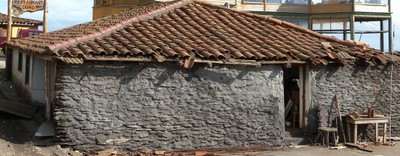
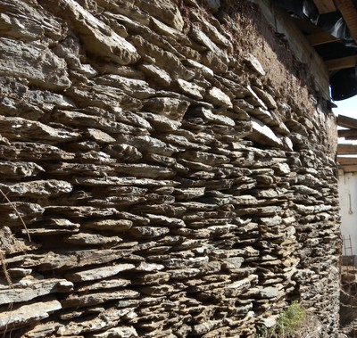
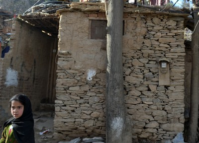

Slate [SPSL]
Slate is a very fine-grained metamorphic rock that easily splits into characteristic, thin slices, i.e. it is very cleavable. Slate is characteristically grey or grey-blue (but can also be black, green, purple, red, or brown). Because it is composed mainly of fine-grained mica flakes and quartz, it is intermediate in hardness, but can still be scratched by metal. It has a dull luster and strong cleavage. Its nonabsorbent properties and durability make it a popular material for roof tiles and paving slabs, and in some cases it is used for wall construction.


Slate stone used for wall construction in coastal areas of Chile (S. Brzev)


Slate stone used for wall construction, Pakistan (S.H.Lodi)